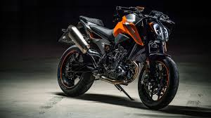
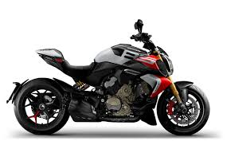

KTM Duke series

Yamaha MT series

Ducati Streetfighter V4



At [World of motorbike], we go beyond the spec sheet. We are a collective of enthusiasts, engineers, and riders dedicated to the pursuit of performance. Our platform serves as a comprehensive resource for the modern sport bike owner, offering expert guidance on aftermarket performance tuning, suspension setups, and superbike maintenance. We bridge the gap between the manufacturer’s showroom and the open road, ensuring our community has access to verified data on the world’s fastest machines. From the legendary Yamaha R-Series to the groundbreaking Ducati Panigale, we cover the bikes that define the limits of speed.


The ride doesn't end when you park the bike. Follow [World Of Motorbike] across our digital channels to stay synchronized with the high-speed world of motorcycling. By staying connected, you’ll get real-time updates on upcoming track days, exclusive bike reveals, and expert maintenance hacks delivered straight to your feed. Whether you’re looking for cinematic reels of the Ducati Panigale V4 or technical breakdowns of the Kawasaki Ninja’s latest ECU updates, our community is where the conversation happens. Don't just watch from the sidelines—engage with fellow riders, share your builds, and help us drive the future of sport bike culture.